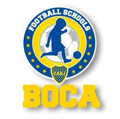

Charchoob Creative Studio
A team of design developers based in Kuwait, providing system designs and web solutions for designers and artists.
boca
The Club Atletico Boca Juniors FC youth division stresses the importance of its sport training program to be considered as a pedagogical process (teaching process) in which the child's age and youth (between five and sixteen years old) are given the utmost value and are naturally respected.

nuqat
Nuqat, firstly known as "Nuqat Ala Al Huroof", has started Nuqat provides a platform of with one objective in mind which was to develop Arab creativity on all levels" including design, advertising, communication that connects and architecture, fashion, production... educates creatives in the Gulf and The first consortium occurred in May 2009 with a focus on Arabic branding and copywriting. In the 2010 edition the Middle East, allowing them to the focus was on Visual Pollution, in which we integrated explore and tackle creative change in several graphic design and architecture disciplines together the region.
Four columns
Four columns
Four columns